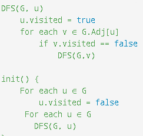

Devam et butonu ile DFS algoritmasını keşfetmeye başlayabilirsiniz.
Öncelikle başlangıç düğümü seçilir ve ziyaret edilir. Ziyaret edilen düğümler turuncu renk ile gösterilmekte ve
ziyaret edilen düğüm
yığına atılır.
Daha sonra seçilen düğümün bir komşusu seçilir ve ziyaret edilir. Bütün düğümler ziyaret edilene kadar ziyaret
işlemleri devam eder.
Ziyaret edilen düğümün başka gidilecek komşusu kalmadığında yığından çıkartılarak mavi renk olur.
Bütün düğüm rengi mavi olduğunda DFS algoritmamız tamamlanmış olacaktır. Yığınımız boş kalacaktır.
DFS algoritması bize düğümler arası ilişkiler hakkında bilgi verir. Bunu en yakın eczaneyi yada marketi bize
bildiren bir uygulamada kullanabiliriz. Bir başka kullanım alanı ise labirent oyunlarıdır.
Karmaşıklık Hesabı
Karmaşıklık hesabı düğümlere bakılarak hesaplanabilir. Kolay yoldan düğümler sadece bir kez ziyaret edildiği için
karmaşıklığına n deriz.
O(n) ile ifade edilir.
Pseudocode
